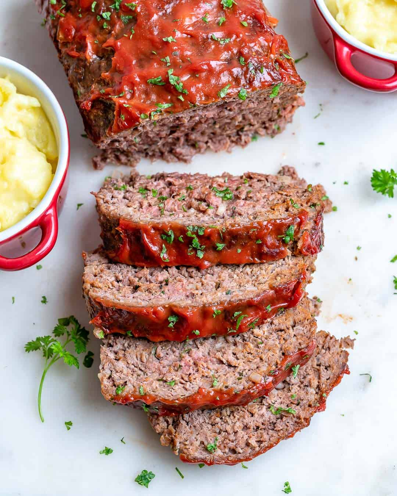

Meatloaf

Quick and easy meatloaf for the family
This is a very easy and no fail recipe for meatloaf.
It won't take longto make at all, at it's quite good!
Ingredients
- 1 1/2 pounds ground beef
- 1 egg
- 1 onion, chopped
- 1 cup milk
- 1 cup dried bread crumbs
- salt and pepper to taste
- 2 tablespoons brown sugar
- 2 tablespons prepared mustard
- 1/3 cup ketchup
Steps
- Preheat oven to 350 degrees F (175 degrees C).
- In a large bowl, combine the beef, egg, onion, milk an bread OR cracker crumbs
- In a separate bowl, combine the brown sugar, mustard and ketchup.
- Bake at 350 degrees F (175 degrees C) for 1 hour.